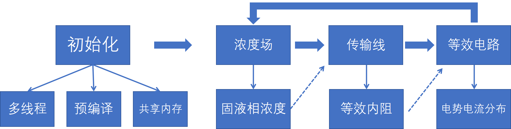

MTK并行计算求解大规模电池阵列
Contents：MTK、PDE、并行计算
Contributor: HY
Email:1171006975@qq.com
如有错误，请批评指正。
为什么使用并行计算
传统的系统建模，往往采用0维模型进行建模(如等效电路法，集中参数法等)，计算量较小，不需要并行计算。但有时候，我们可能不仅仅想研究整个系统的输出特性，还想追踪系统内部各个组件的输出特性。当系统由很多相同的组件(组件参数不一定相同)连接而成时(如上百个电池单体组成的电池阵列，上千个燃料电池单体组成的电堆，超大规模水力管网等)，即使每个单体的计算量很小，但加起来计算量会急剧上升。
如果我们使用@connector来连接各个组件，组成一个超大规模的矩阵来计算，这在单体数目较少时是可以实现的，但单体数目较多时，很可能会遇到一些瓶颈。这是因为计算时间不是与方程的维度成正比，而是与方程维度的平方成正比。例如，电池阵列中单体数目为100时，计算时间可能是1s，当电池数目为1000时，计算时间可能就变成了100s。更糟糕的是，编译时间和内存占用也是与方程维度的平方成正比！很可能会导致一个现象：编译2小时，计算5秒钟。
但我们仔细观察，可以发现，系统内部各个组件的联系有时候其实没有那么紧密，例如燃料电池电堆中，各个单体流过的电流是一样的(即具有相同的边界条件)，我们完全可以先算出各个单体的电压，然后再加起来，就是整个电池电堆的电压。这个时候，我们就能采用并行计算的方法，同时计算很多个单体。
接下来，我将以大规模的电池阵列为例，详细介绍如何实现MTK并行计算。
MTK并行计算求解大规模电池阵列有这么几步：
- 建立锂电池单体的P2D模型(伪三维模型，空间离散后为DAEs)
- 求解各个锂电池单体模型，得到Li浓度等变量值(并行计算)。
- 通过戴维南定理，将单体模型等效为一个内阻和一个电压源(并行计算)。
- 求解由等效内阻和等效电压源组成的电池阵列电路方程(线性方程组)。

每个步骤的实现方式和原理会在下文进一步展开。
1.建立锂电池单体的P2D模型
具体的P2D模型建模过程可参考该文献。
本文中将P2D模型拆成两部分，一部分是固液相模型，用来求电池的空间浓度变化，为ODEs，另一部分是传输线模型，用来求电池的外特性曲线，为NonlinerEqs。在一个时间步长内，我们可以认为电池的浓度是不变的，因此电池的外特性也就固定了，我们可以根据电池外特性将其等效为一个内阻和一个电压源。在每次迭代后，电池的外特性都会发生改变，因此等效内阻和等效电压源的参数是会一直变化的。
具体的代码文件为P2D_并行_固液相模型.jl和P2D_并行_电路模型.jl。
2.程序初始化
using Distributed
addprocs(4)开启4个子线程，addprocs(n)表示开启n个子线程。
@everywhere begin
#组件封装
using SharedArrays, Pkg, LinearAlgebra
include("../assets/P2D_并行_固液相模型.jl")
include("../assets/P2D_并行_电路模型.jl")
include("../assets/get_variables_index.jl")
end在每个线程中，都加载一下库和封装的组件。@everywhere表示在每个线程中都执行该代码。get_variables_index.jl用来找到变量对应的下标，以便于在不同Problem之间传递参数值。
@everywhere begin
#参数设置
series_num = 100
parallel_num = 2
t_step = 5
simulate_time = 2500
n_mesh_neg = 8
n_mesh_sep = 8
n_mesh_pos = 8
Current = 20 * parallel_num
Current_standard = 20
c_s_max_neg = 31390
c_s_max_pos = 48390
filename_neg = "../assets/neg_OCV.txt"
filename_pos = "../assets/pos_OCV.txt"
r_s_neg = 6.3e-6
r_s_pos = 2.13e-6
F = 96485
R = 8.3145
T = 293.15
L_neg = 46.6e-6
L_sep = 18.7e-6
L_pos = 43e-6
eps_s_neg = 0.49
eps_s_pos = 0.57
Sa_neg = 3 * eps_s_neg / r_s_neg
Sa_pos = 3 * eps_s_pos / r_s_pos
k_ct_neg = 2e-11
k_ct_pos = 2e-11
h_neg = L_neg / n_mesh_neg
h_sep = L_sep / n_mesh_sep
h_pos = L_pos / n_mesh_pos
# 创建插值函数
data_neg = readdlm(filename_neg)
data_pos = readdlm(filename_pos)
ocv_neg = LinearInterpolation(data_neg[:, 1], data_neg[:, 2])
ocv_pos = LinearInterpolation(data_pos[:, 1], data_pos[:, 2])
end设置参数，创建插值函数。
@everywhere begin
#电化学方程
@named batter_chemistry = P2D_Libatter_chemistry(n_mesh_neg=8, n_mesh_sep=8, n_mesh_pos=8)
@named OdeFun_chemistry = ODESystem([], t)
@named model_chemistry = compose(OdeFun_chemistry, [batter_chemistry])
sys_chemistry = structural_simplify(model_chemistry)
prob_chemistry = ODEProblem(sys_chemistry, [], (0.0, 5.0))
sol_chemistry = solve(prob_chemistry, CVODE_Adams()).u[end]
chemistery_index = get_chemistery_index(batter_chemistry, sys_chemistry)
#传输线方程
@named batter_electric = P2D_Libatter_electric()
@named current = Constant(U=Current)
@named current_source = Current_source()
@named ground = Ground()
eqs = [
connect(batter_electric.n, ground.g, current_source.n)
connect(batter_electric.p, current_source.p)
connect(current.u, current_source.u)]
@named OdeFun_electric = ODESystem(eqs, t)
@named model_electric = compose(OdeFun_electric, [batter_electric, current, current_source, ground])
sys_electric = structural_simplify(model_electric)
prob_electric = NonlinearProblem(ODEProblem(sys_electric, [], (0.0, 0.0), []))
sol_electric = solve(prob_electric, KINSOL()).u
electric_index = get_electric_index(batter_electric, sys_electric)
electric_vi_index = get_electric_vi_index(batter_electric, sys_electric)
end初始化固液相浓度方程(ODEs)和传输线方程(NonlinearEqs)。其中ODEs采用Sundials中的CVODE_Adams()方法,NonlinearEqs采用Sundials中的KINSOL()方法(速度非常快)。
begin
#创建共享数组
electric_para_sharedarrays = SharedArray{Float64}(series_num * parallel_num, 2 * n_mesh_neg + 2 * n_mesh_pos + 4)
chemistry_para_sharedarrays = SharedArray{Float64}(series_num * parallel_num, 3 * n_mesh_neg + 3 * n_mesh_pos + n_mesh_sep + 5)
chemistry_last_stats_sharedarrays = SharedArray{Float64}(series_num * parallel_num, length(prob_chemistry.u0))
electric_last_stats_sharedarrays = SharedArray{Float64}(series_num * parallel_num, length(prob_electric.u0))
electric_fit_k_sharedarrays = SharedArray{Float64}(series_num * parallel_num, 2)
equivalent_vi_sharedarrays = SharedArray{Float64}(parallel_num +1)
electric_i_sharedarrays = SharedArray{Float64}(series_num * parallel_num,Int(floor(simulate_time/t_step+1)))
electric_v_sharedarrays = SharedArray{Float64}(series_num * parallel_num,Int(floor(simulate_time/t_step+1)))
iterations_sharedarrays = SharedArray{Int64}(1)
end创建共享数组，该数组保存在系统底层。各个线程均能以很快的速度直接访问。
3.计算初始时刻系统参数
time_now = 0
iterations_sharedarrays[1] = iterations_sharedarrays[1] + 1
#电化学方程
@sync @distributed for i in 1:series_num*parallel_num
chemistry_para_sharedarrays[i, 1:2*n_mesh_neg+2*n_mesh_pos+n_mesh_sep+3] = sol_chemistry[chemistery_index]
chemistry_last_stats_sharedarrays[i, :] = sol_chemistry
for j in 2*n_mesh_neg+2*n_mesh_pos+n_mesh_sep+4:3*n_mesh_neg+2*n_mesh_pos+n_mesh_sep+4
chemistry_para_sharedarrays[i, j] = ocv_neg(chemistry_para_sharedarrays[i, j-(2*n_mesh_neg+2*n_mesh_pos+n_mesh_sep+3)] / c_s_max_neg)
chemistry_para_sharedarrays[i, j+n_mesh_neg+1] = ocv_pos(chemistry_para_sharedarrays[i, j-(2*n_mesh_neg+2*n_mesh_pos+n_mesh_sep+3)+n_mesh_neg+1] / c_s_max_pos)
end
electric_fit_k_sharedarrays[i, :] = inv([-Current_standard 1.0; -Current_standard/2 1.0]) *
reshape([solve(remake(prob_electric, p=[chemistry_para_sharedarrays[i, :]..., Current_standard]), KINSOL()).u[electric_vi_index][1],
solve(remake(prob_electric, p=[chemistry_para_sharedarrays[i, :]..., Current_standard / 2]), KINSOL()).u[electric_vi_index][1]], (2, 1))
end
#等效电路方程
equivalent_vi_sharedarrays = inv([Diagonal([sum(electric_fit_k_sharedarrays[i*series_num-series_num+1:i*series_num, 1]) for i in 1:parallel_num]) -ones(parallel_num, 1);[ones(parallel_num, 1)... 0.0]]) *
[(-sum(electric_fit_k_sharedarrays[(i-1)*series_num+1:i*series_num, 2]) for i in 1:parallel_num)...,-Current];
electric_i_sharedarrays[:, iterations_sharedarrays[1]] = vcat([ones(series_num)*equivalent_vi_sharedarrays[i] for i in 1:parallel_num]...)
#传输线方程
@sync @distributed for i in 1:series_num*parallel_num
electric_last_stats_sharedarrays[i, :] = solve(remake(prob_electric, p=[chemistry_para_sharedarrays[i, :]..., -electric_i_sharedarrays[i, iterations_sharedarrays[1]]]), KINSOL()).u
electric_para_sharedarrays[i, 1:n_mesh_neg+n_mesh_pos+2] = electric_last_stats_sharedarrays[i, :][electric_index]
electric_v_sharedarrays[i, iterations_sharedarrays[1]] = electric_last_stats_sharedarrays[i, :][1]
electric_para_sharedarrays[i, n_mesh_neg+n_mesh_pos+3:2*n_mesh_neg+2*n_mesh_pos+4] = [
0.5 * Sa_neg * h_neg * (F * k_ct_neg * (c_s_max_neg - chemistry_para_sharedarrays[i, 1])^0.5 * chemistry_para_sharedarrays[i, 1]^0.5 * chemistry_para_sharedarrays[i, 1+n_mesh_pos+n_mesh_neg+2]^0.5) * (exp(0.5 * F * electric_para_sharedarrays[i, 1] / R / T) - exp(-0.5 * F * electric_para_sharedarrays[i, 1] / R / T)),
[Sa_neg * h_neg * (F * k_ct_neg * (c_s_max_neg - chemistry_para_sharedarrays[i, j])^0.5 * chemistry_para_sharedarrays[i, j]^0.5 * chemistry_para_sharedarrays[i, j+n_mesh_pos+n_mesh_neg+2]^0.5) * (exp(0.5 * F * electric_para_sharedarrays[i, j] / R / T) - exp(-0.5 * F * electric_para_sharedarrays[i, j] / R / T)) for j in 2:n_mesh_neg]...,
0.5 * Sa_neg * h_neg * (F * k_ct_neg * (c_s_max_neg - chemistry_para_sharedarrays[i, n_mesh_neg+1])^0.5 * chemistry_para_sharedarrays[i, n_mesh_neg+1]^0.5 * chemistry_para_sharedarrays[i, n_mesh_neg+1+n_mesh_pos+n_mesh_neg+2]^0.5) * (exp(0.5 * F * electric_para_sharedarrays[i, n_mesh_neg+1] / R / T) - exp(-0.5 * F * electric_para_sharedarrays[i, n_mesh_neg+1] / R / T)),
0.5 * Sa_pos * h_pos * (F * k_ct_pos * (c_s_max_pos - chemistry_para_sharedarrays[i, 1+n_mesh_neg+1])^0.5 * chemistry_para_sharedarrays[i, 1+n_mesh_neg+1]^0.5 * chemistry_para_sharedarrays[i, 1+n_mesh_pos+n_mesh_neg+2+n_mesh_neg+1]^0.5) * (exp(0.5 * F * electric_para_sharedarrays[i, 1+n_mesh_neg+1] / R / T) - exp(-0.5 * F * electric_para_sharedarrays[i, 1+n_mesh_neg+1] / R / T)),
[Sa_pos * h_pos * (F * k_ct_pos * (c_s_max_pos - chemistry_para_sharedarrays[i, j+n_mesh_neg+1])^0.5 * chemistry_para_sharedarrays[i, j+n_mesh_neg+1]^0.5 * chemistry_para_sharedarrays[i, j+n_mesh_pos+n_mesh_neg+2+n_mesh_neg+1]^0.5) * (exp(0.5 * F * electric_para_sharedarrays[i, j+n_mesh_neg+1] / R / T) - exp(-0.5 * F * electric_para_sharedarrays[i, j+n_mesh_neg+1] / R / T)) for j in 2:n_mesh_pos]...,
0.5 * Sa_pos * h_pos * (F * k_ct_pos * (c_s_max_pos - chemistry_para_sharedarrays[i, n_mesh_neg+1+n_mesh_neg+1])^0.5 * chemistry_para_sharedarrays[i, n_mesh_neg+1+n_mesh_neg+1]^0.5 * chemistry_para_sharedarrays[i, n_mesh_neg+1+n_mesh_pos+n_mesh_neg+2+n_mesh_neg+1]^0.5) * (exp(0.5 * F * electric_para_sharedarrays[i, n_mesh_neg+1+n_mesh_neg+1] / R / T) - exp(-0.5 * F * electric_para_sharedarrays[i, n_mesh_neg+1+n_mesh_neg+1] / R / T))]
end代码分别计算了锂电池模型的浓度，外特性，等效内阻和等效电压源。其中@distributed表示分布式计算，例如for i in 1:100，如果有四个线程，那么在各个线程中，i可能就是1:25,26:50,51:75,76:100。上文说过，各个电池单体相对独立，那么我们可以将电池阵列组装为一个数组，然后调用@distributed进行并行计算。@sync表示执行完该代码后，再执行下一行代码。因为@distributed本身是一个异步指令，子线程执行的同时，主线程会继续执行下一行代码。因此我们需要"等等"子线程。
4.系统显式时间推进迭代计算
while time_now < 2500
#loop
iterations_sharedarrays[1] = iterations_sharedarrays[1] + 1
time_now = time_now + t_step
#电化学方程
@sync @distributed for i in 1:series_num*parallel_num
chemistry_last_stats_sharedarrays[i, :] = solve(remake(prob_chemistry, u0=chemistry_last_stats_sharedarrays[i, :], p=electric_para_sharedarrays[i, :]), CVODE_Adams()).u[end]
chemistry_para_sharedarrays[i, 1:2*n_mesh_neg+2*n_mesh_pos+n_mesh_sep+3] = chemistry_last_stats_sharedarrays[i, :][chemistery_index]
for j in 2*n_mesh_neg+2*n_mesh_pos+n_mesh_sep+4:3*n_mesh_neg+2*n_mesh_pos+n_mesh_sep+4
chemistry_para_sharedarrays[i, j] = ocv_neg(chemistry_para_sharedarrays[i, j-(2*n_mesh_neg+2*n_mesh_pos+n_mesh_sep+3)] / c_s_max_neg)
chemistry_para_sharedarrays[i, j+n_mesh_neg+1] = ocv_pos(chemistry_para_sharedarrays[i, j-(2*n_mesh_neg+2*n_mesh_pos+n_mesh_sep+3)+n_mesh_neg+1] / c_s_max_pos)
end
electric_fit_k_sharedarrays[i, :] = inv([-Current_standard 1.0; -Current_standard/2 1.0]) *
[solve(remake(prob_electric, u0=electric_last_stats_sharedarrays[i, :], p=[chemistry_para_sharedarrays[i, :]..., Current_standard]), KINSOL()).u[electric_vi_index][1]
solve(remake(prob_electric, u0=electric_last_stats_sharedarrays[i, :], p=[chemistry_para_sharedarrays[i, :]..., Current_standard / 2]), KINSOL()).u[electric_vi_index][1]]
end
#等效电路方程
equivalent_vi_sharedarrays = inv([Diagonal([sum(electric_fit_k_sharedarrays[i*series_num-series_num+1:i*series_num, 1]) for i in 1:parallel_num]) -ones(parallel_num, 1);[ones(parallel_num, 1)... 0.0]]) *
[(-sum(electric_fit_k_sharedarrays[(i-1)*series_num+1:i*series_num, 2]) for i in 1:parallel_num)...,-Current];
electric_i_sharedarrays[:, iterations_sharedarrays[1]] = vcat([ones(series_num)*equivalent_vi_sharedarrays[i] for i in 1:parallel_num]...)
#传输线方程
@sync @distributed for i in 1:series_num*parallel_num
electric_last_stats_sharedarrays[i, :] = solve(remake(prob_electric, u0=electric_last_stats_sharedarrays[i, :], p=[chemistry_para_sharedarrays[i, :]..., -electric_i_sharedarrays[i, iterations_sharedarrays[1]]]), KINSOL()).u
electric_para_sharedarrays[i, 1:n_mesh_neg+n_mesh_pos+2] = electric_last_stats_sharedarrays[i, :][electric_index]
electric_v_sharedarrays[i, iterations_sharedarrays[1]] = electric_last_stats_sharedarrays[i, :][1]
electric_para_sharedarrays[i, n_mesh_neg+n_mesh_pos+3:2*n_mesh_neg+2*n_mesh_pos+4] = [
0.5 * Sa_neg * h_neg * (F * k_ct_neg * (c_s_max_neg - chemistry_para_sharedarrays[i, 1])^0.5 * chemistry_para_sharedarrays[i, 1]^0.5 * chemistry_para_sharedarrays[i, 1+n_mesh_pos+n_mesh_neg+2]^0.5) * (exp(0.5 * F * electric_para_sharedarrays[i, 1] / R / T) - exp(-0.5 * F * electric_para_sharedarrays[i, 1] / R / T)),
[Sa_neg * h_neg * (F * k_ct_neg * (c_s_max_neg - chemistry_para_sharedarrays[i, j])^0.5 * chemistry_para_sharedarrays[i, j]^0.5 * chemistry_para_sharedarrays[i, j+n_mesh_pos+n_mesh_neg+2]^0.5) * (exp(0.5 * F * electric_para_sharedarrays[i, j] / R / T) - exp(-0.5 * F * electric_para_sharedarrays[i, j] / R / T)) for j in 2:n_mesh_neg]...,
0.5 * Sa_neg * h_neg * (F * k_ct_neg * (c_s_max_neg - chemistry_para_sharedarrays[i, n_mesh_neg+1])^0.5 * chemistry_para_sharedarrays[i, n_mesh_neg+1]^0.5 * chemistry_para_sharedarrays[i, n_mesh_neg+1+n_mesh_pos+n_mesh_neg+2]^0.5) * (exp(0.5 * F * electric_para_sharedarrays[i, n_mesh_neg+1] / R / T) - exp(-0.5 * F * electric_para_sharedarrays[i, n_mesh_neg+1] / R / T)),
0.5 * Sa_pos * h_pos * (F * k_ct_pos * (c_s_max_pos - chemistry_para_sharedarrays[i, 1+n_mesh_neg+1])^0.5 * chemistry_para_sharedarrays[i, 1+n_mesh_neg+1]^0.5 * chemistry_para_sharedarrays[i, 1+n_mesh_pos+n_mesh_neg+2+n_mesh_neg+1]^0.5) * (exp(0.5 * F * electric_para_sharedarrays[i, 1+n_mesh_neg+1] / R / T) - exp(-0.5 * F * electric_para_sharedarrays[i, 1+n_mesh_neg+1] / R / T)),
[Sa_pos * h_pos * (F * k_ct_pos * (c_s_max_pos - chemistry_para_sharedarrays[i, j+n_mesh_neg+1])^0.5 * chemistry_para_sharedarrays[i, j+n_mesh_neg+1]^0.5 * chemistry_para_sharedarrays[i, j+n_mesh_pos+n_mesh_neg+2+n_mesh_neg+1]^0.5) * (exp(0.5 * F * electric_para_sharedarrays[i, j+n_mesh_neg+1] / R / T) - exp(-0.5 * F * electric_para_sharedarrays[i, j+n_mesh_neg+1] / R / T)) for j in 2:n_mesh_pos]...,
0.5 * Sa_pos * h_pos * (F * k_ct_pos * (c_s_max_pos - chemistry_para_sharedarrays[i, n_mesh_neg+1+n_mesh_neg+1])^0.5 * chemistry_para_sharedarrays[i, n_mesh_neg+1+n_mesh_neg+1]^0.5 * chemistry_para_sharedarrays[i, n_mesh_neg+1+n_mesh_pos+n_mesh_neg+2+n_mesh_neg+1]^0.5) * (exp(0.5 * F * electric_para_sharedarrays[i, n_mesh_neg+1+n_mesh_neg+1] / R / T) - exp(-0.5 * F * electric_para_sharedarrays[i, n_mesh_neg+1+n_mesh_neg+1] / R / T))]
end
end没啥好说的，时间方向上的迭代推进。
最终效果

如果采用MTK直接建立电池阵列的模型，那么计算时间与(单体数目)^2乘正比，如果采用并行计算，计算时间与(单体数目)^1乘正比。